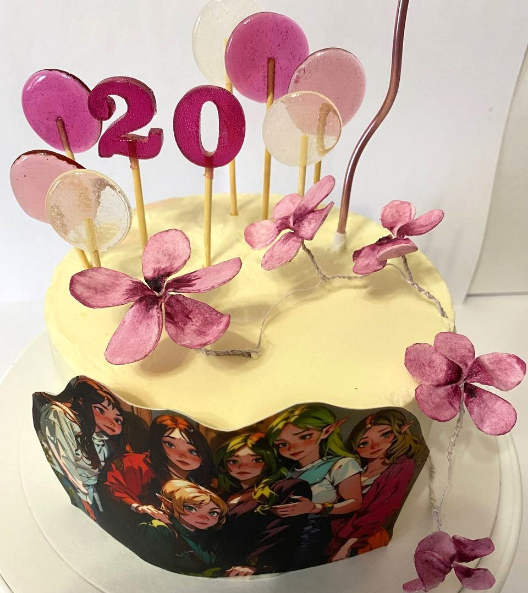
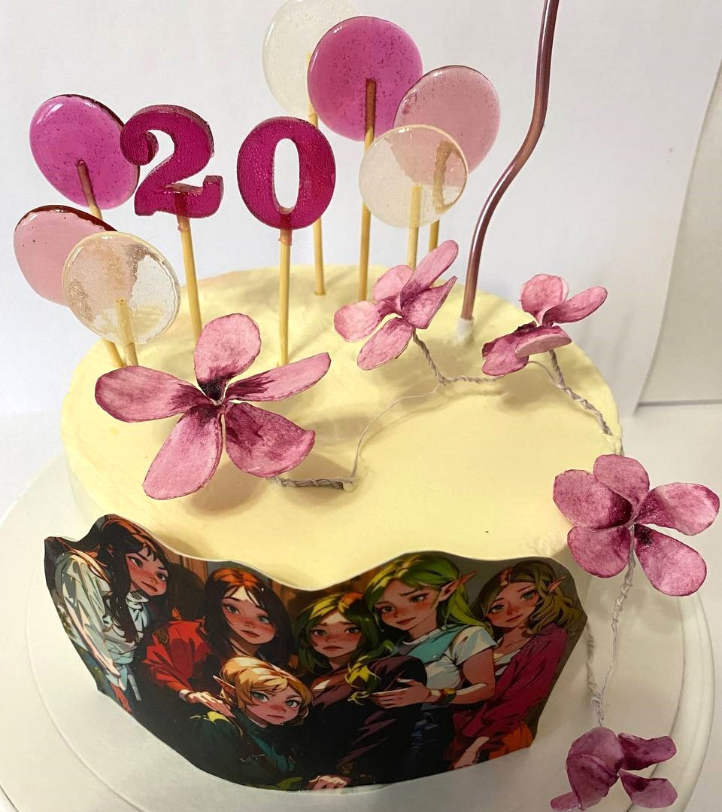

Моя домашняя кошка - это не просто питомец, она стала частью моей семьи.Ее имя - Луна. На мое 20 - летие, мои подруги решили сделать мне подарок и подарить маленький комочек счастья.
Кеша - это волнистый попугай. Ему уже больше 6 лет.
Занимаюсь танцами в школе танцев LI | VE
Я учусь в школе танцев, где каждое знятие я погружаюсь в захватывающий мир танца. Каждый урок - это новое приключение. Мы не только узнаем различные стили танца, но и учимся работать в команде. Танец требует согласованности и синхронности движений каждого участника. Школа танцев "LIVE" - это не только место, где мы развиваем свои танцевальные навыки, но и маленькое сообщество, где мы находим поддержку и друзей. Мы проводим время вместе, делимся своими творческими идеями и вдохновляем друг друга на большие достижения. Танец - это мое удовольствие, страсть и способ самовыражения.
Домашние питомцы :|
|
Моя домашняя кошка - это не просто питомец, она стала частью моей семьи.Ее имя - Луна. На мое 20 - летие, мои подруги решили сделать мне подарок и подарить маленький комочек счастья. Кеша - это волнистый попугай. Ему уже больше 6 лет. |
Увлекаюсь кондитеством, делаю торты
Кондитерское дело - настоящее искусство, которое можно освоить и воплотить в жизнь прямо дома. Ведь многочисленные рецепты сладостей и десертов стали доступными благодаря интернету и специализированным книгам.

 
Домашнее кондитерство является отличным хобби, которое приносит не только радость и удовольствие, но и позволяет создавать вкусные и оригинальные сладости для своих близких и друзей.

Домашнее кондитерство является отличным хобби, которое приносит не только радость и удовольствие, но и позволяет создавать вкусные и оригинальные сладости для своих близких и друзей.

| Два года назад я погрузилась в увлекательный мир выпечки и начала заниматься созданием тортов. Это увлечение стало не только хобби, но и неким пристанищем для моей творческой энергии. С верой и страстью я бросилась в изучение различных рецептов и техник приготовления тортов. С каждым новым тортом я ставила перед собой все более высокую планку качества и внешнего вида. С течением времени мои навыки в создании тортов стали все более утонченными. Я осваивала сложные техники декорирования, экспериментировала с различными вкусовыми сочетаниями и искала свое уникальное видение каждого торта. |
Когда я впервые предложила свои торты своим друзьям и семье, они были в восторге от вкуса и внешнего вида тортов. Это был мой первый успех, который мне дал мотивацию продолжать.Сегодня я продолжаю развиваться и совершенствоваться в искусстве приготовления тортов. Каждое новое задание ставит передо мной новые вызовы и помогает развиваться в этой области.Я горжусь своими достижениями и уверена, что торты стали неотъемлемой частью моей жизни. Я испытываю истинное удовольствие, создавая вкусные и красивые произведения искусства, которые радуют душу и глаза каждого, кто их пробует. |